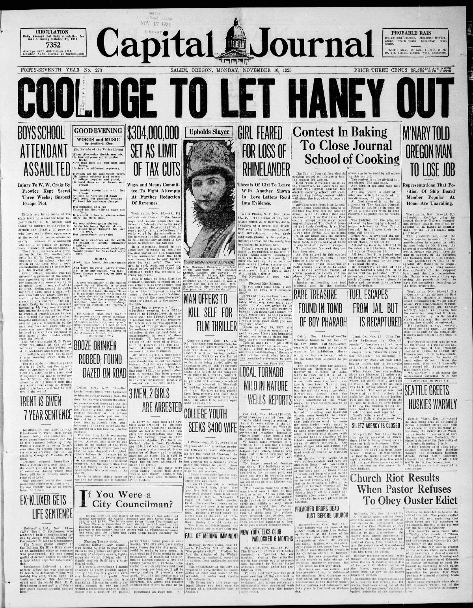
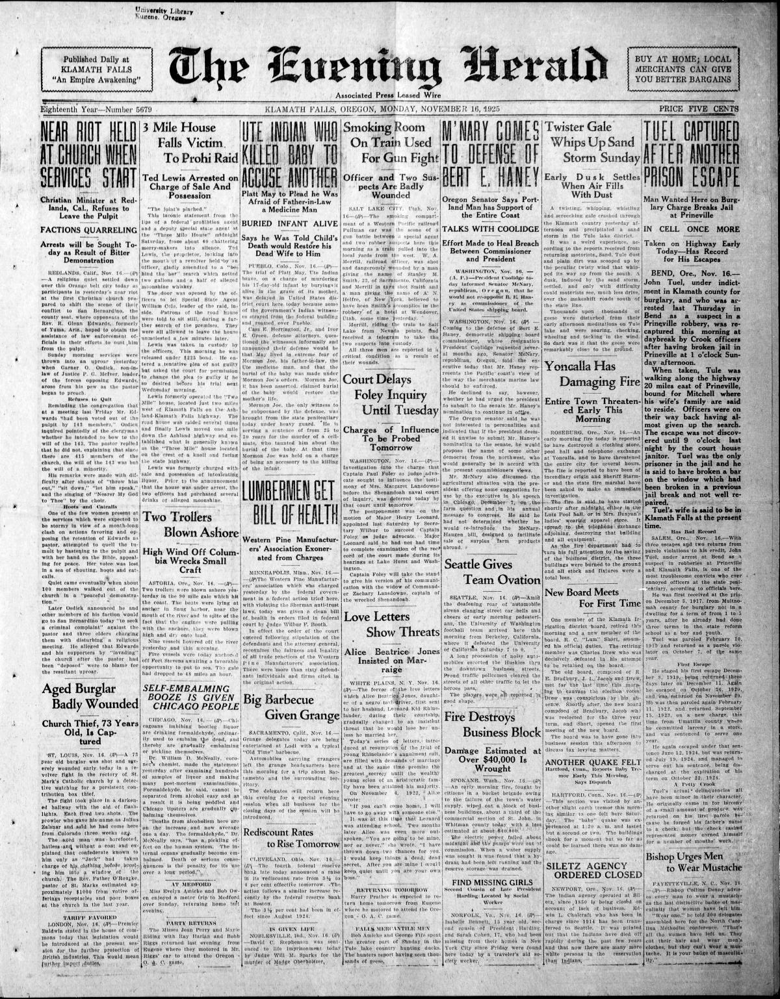
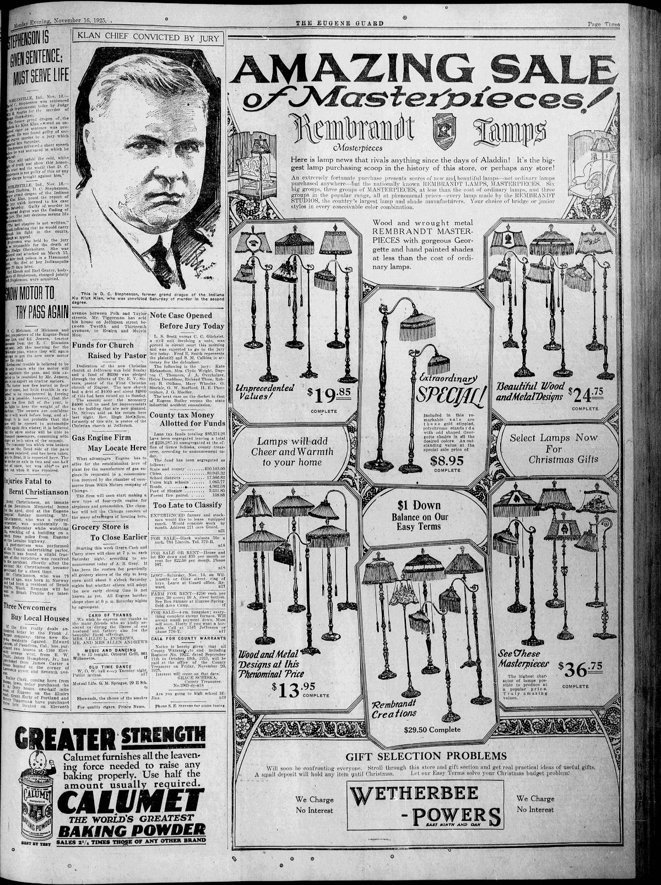

HN HN-445 · November 16, 1925 · Crime, Law & Justice > Executions, Sentencing & Wrongful Convictions > Sentencing
Source: Indianapolis Times, p. 1 — original page; Indiana Historical Bureau.
Report: The newspaper reported that D. C. Stephenson, previously a powerful Indiana Ku Klux Klan leader, had been found guilty by a jury of second-degree murder and sentenced to life imprisonment for the killing of Madge Oberholtzer. Related coverage described proceedings involving his associates.
Assessment: Unlike April's charge (HN-442), this was an established conviction and sentence, confirmed by Indiana's official historical records. The Indianapolis Times' investigation of Klan-linked influence later became part of the political scandal's aftermath; the trial verdict does not establish every accusation against every person in the surrounding reports.
Identity-review candidate peers: HN-442:Algorithmic
Authentic scans retrieved from Historic Oregon Newspapers (University of Oregon). Article crops are located using the archive's own ALTO OCR word coordinates and rendered at native crop resolution; page scans are 1,200-pixel-wide renditions. No images were generated, mocked, or retouched.



Not yet acquired. Queued for provider-specific acquisition testing (see source-acquisition manifest).
URL (preserved verbatim): https://newspapers.library.in.gov/?a=d&d=IPT19251116.1.1
Saved research report: Historical_Newspaper_Event_Research_428-452_2026-10-23.md
Evidence note: A newspaper report means a historical publication made a claim; it does not establish that claim as fact. Contemporary reporting is separated from later scholarly context and our own assessment.